One dictionary in three clients. The shots share one small sample dictionary: C++ and OpenGL ES terms, a few books, and a Term type with Standard, Difficulty and Diagram fields. Click any image to view it full size.
The Qt Widgets application, which opens the SQLite database directly.
Main windowFilters above the column names, the item table, the rendered content with its images, and the links below it — all on one screen.Dark modeThe whole application switches from the View menu, and remembers your choice.Item editor — GeneralIdentity and state of an item: group, type, title, disambiguation, status, understanding level and pinned flag.Item editor — ContentMarkdown on the left, the rendered preview on the right, and a formatting toolbar above them.Item editor — ValuesThe fields of the item's type, including an image field with its thumbnail.Item editor — MetadataTags, flags, aliases and key/value properties, each with add, edit and remove.
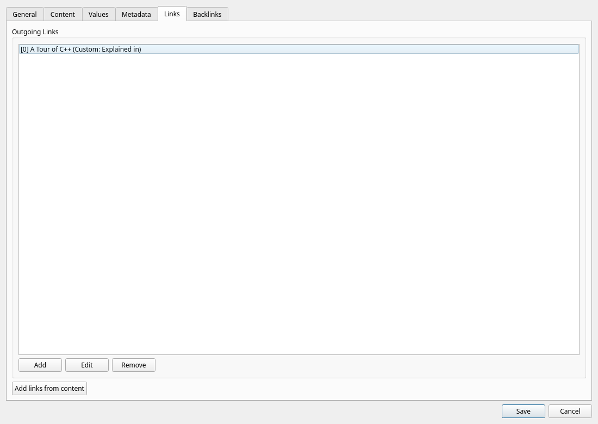
Item editor — LinksOutgoing typed relationships, and Add links from content for the names the text already mentions.
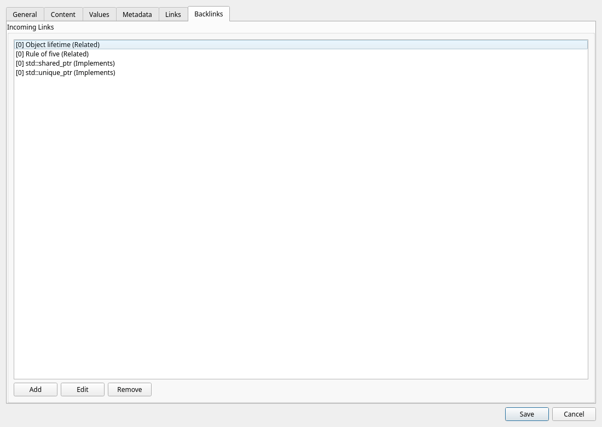
Item editor — BacklinksWho points at this item — created from either end.Relationship graphThe neighbourhood of an item up to three links away. Zoom in and out, fit it again, or take it full screen.
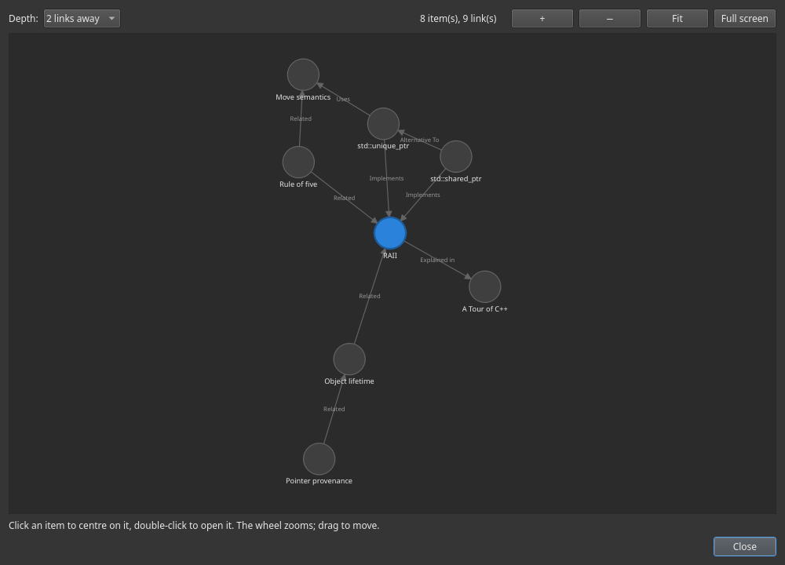
Relationship graph, darkThe same graph after dark.ReviewWhat is due, one card at a time: the answer on request, then Again, Hard, Good or Easy.AlarmsEvery alarm in one list, the soonest first; the one still ringing is in bold.An alarm going offThe Alarm window stays on top until you answer it — dismiss it once and it stops ringing on every device.InboxA title and a few lines, saved to Default without a type. File it properly later.Image viewerAn image value at full size, fitted to the window when it opens.
Web client
Static HTML, CSS and JavaScript against LexiconServer — no build step, no framework.
Web clientThe same screen in a browser: search, filters, the table and the content of the selected item.
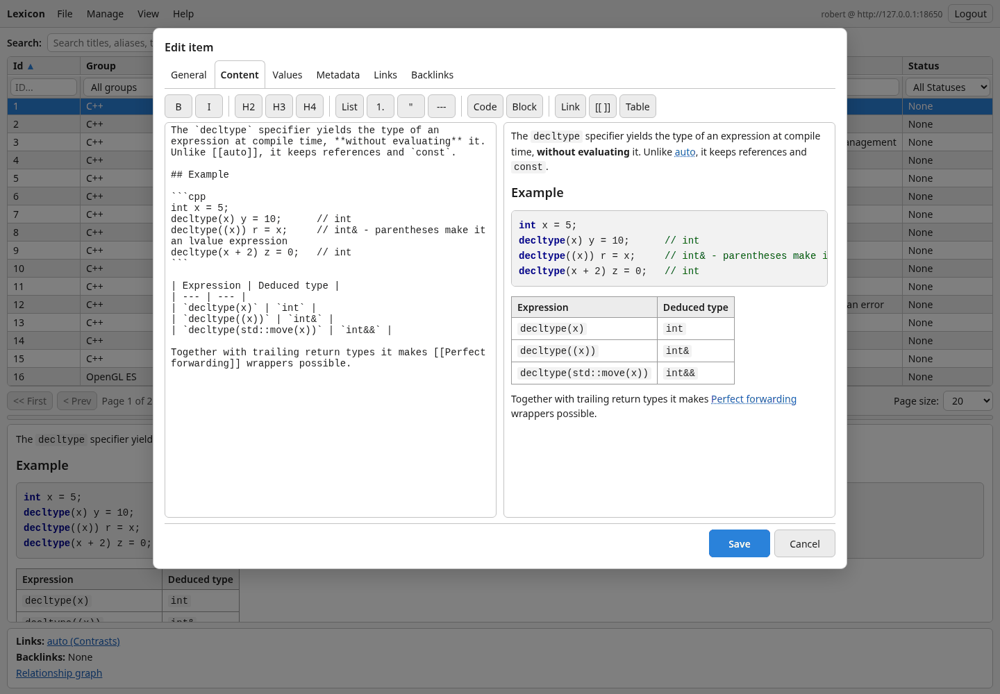
Web item editorThe editor with the same six tabs, Markdown and preview side by side.
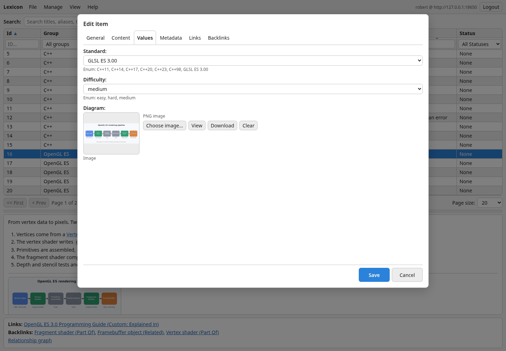
Values with an imageTyped fields in the browser, images included — choose, view, download or clear.
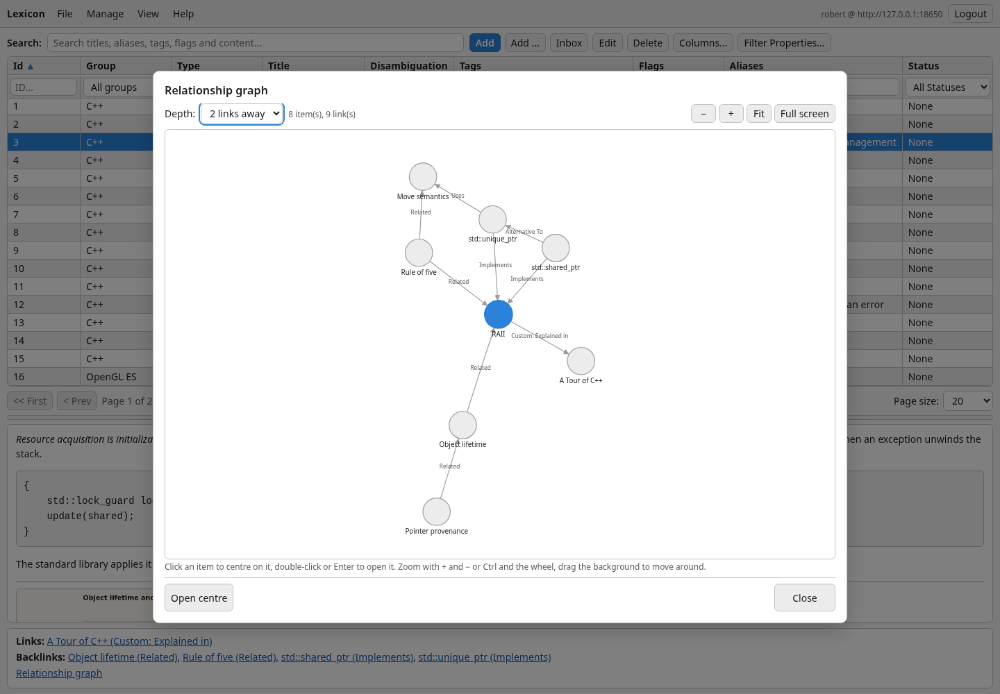
Graph in the browserZoom with the buttons, the keys or Ctrl and the wheel; drag the background to move around.Review in the browserThe same queue and the same ratings as the desktop.
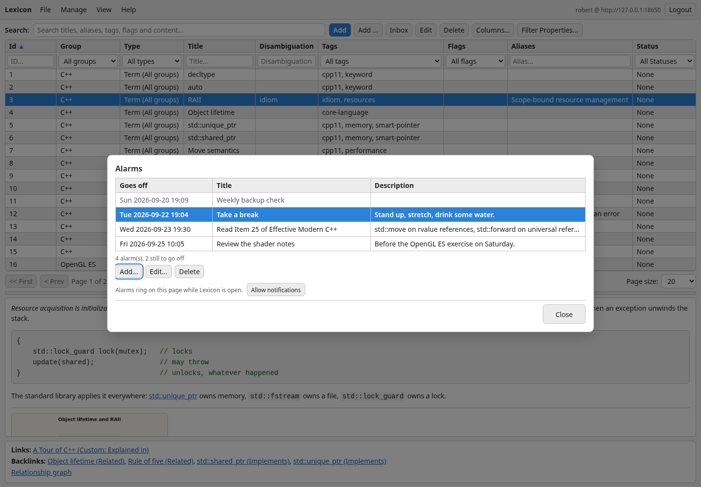
Alarms in the browserAdd, edit and delete alarms, and allow system notifications for them.
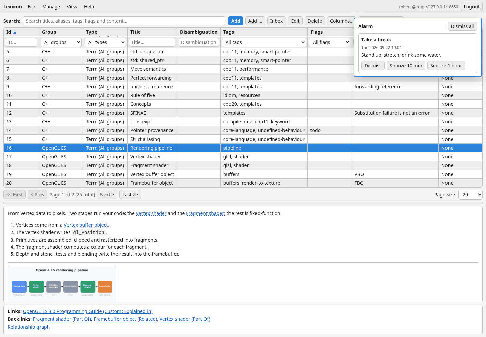
An alarm in the browserA panel over the page, a short chime, and a system notification when the browser allows it.On a phoneBelow 860 pixels the client becomes a phone layout, with the secondary actions behind one menu.
Android app
Kotlin and Jetpack Compose, against the same server.
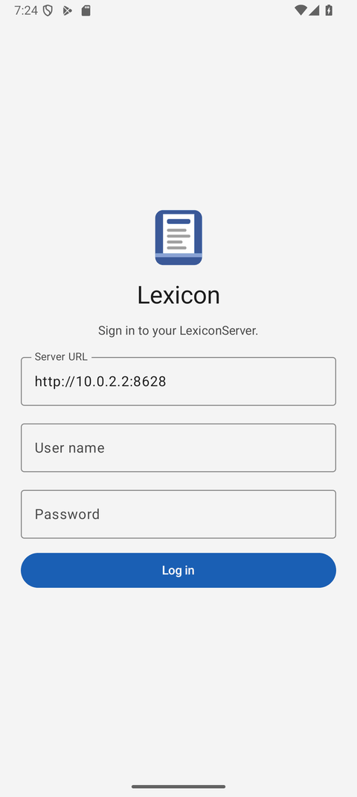
Sign inThe server address, once.ItemsServer-side search, filters and sorting.An itemValues, content and links.
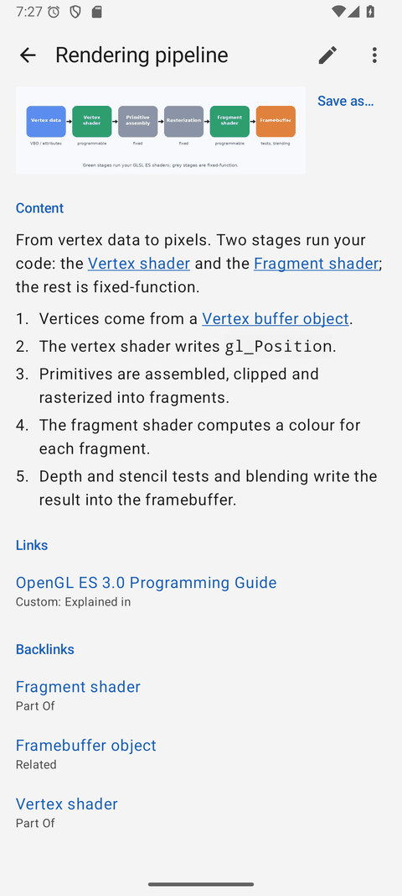
ImagesUnder the content, full size on a tap.
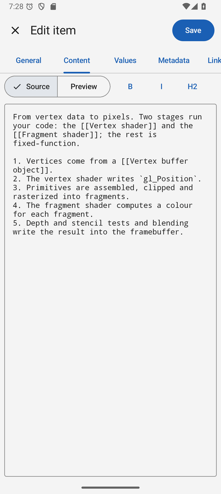
Editor — ContentMarkdown with a preview.
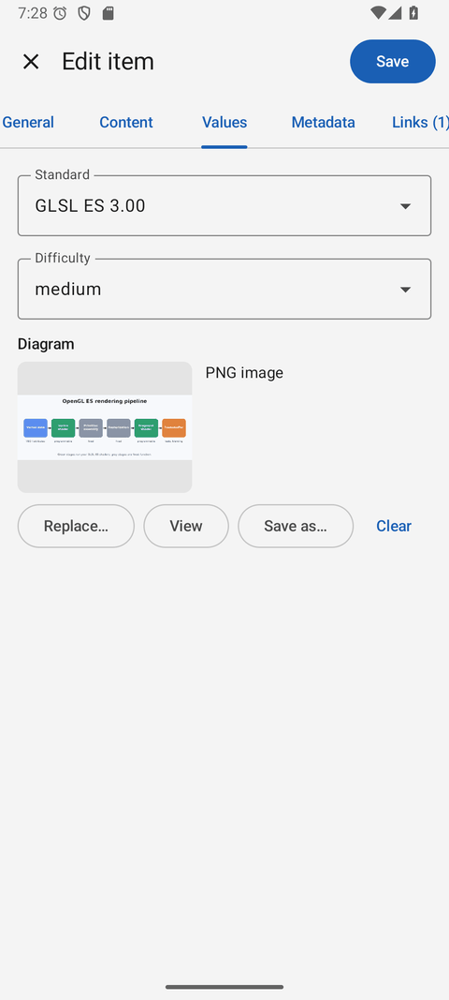
Editor — ValuesThe fields of the item's type.GraphZoom, fit, and the items listed below.
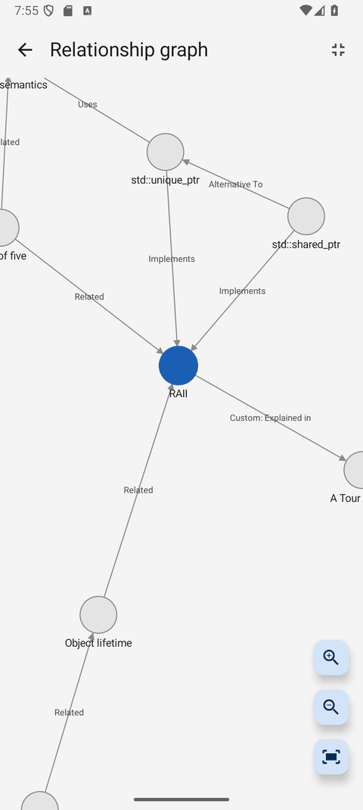
Graph, full screenThe whole screen for the graph.ReviewThe same queue on the phone.AlarmsWith date and time pickers.A ringing alarmEven when the app is closed.InboxOffline too — sent when the server is back.
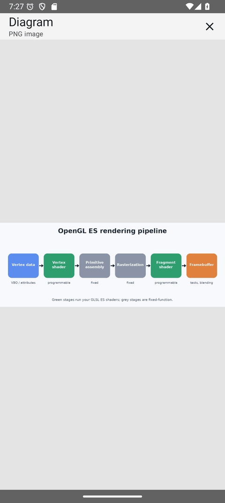
Image viewerPinch to zoom.DrawerEverything one tap away.